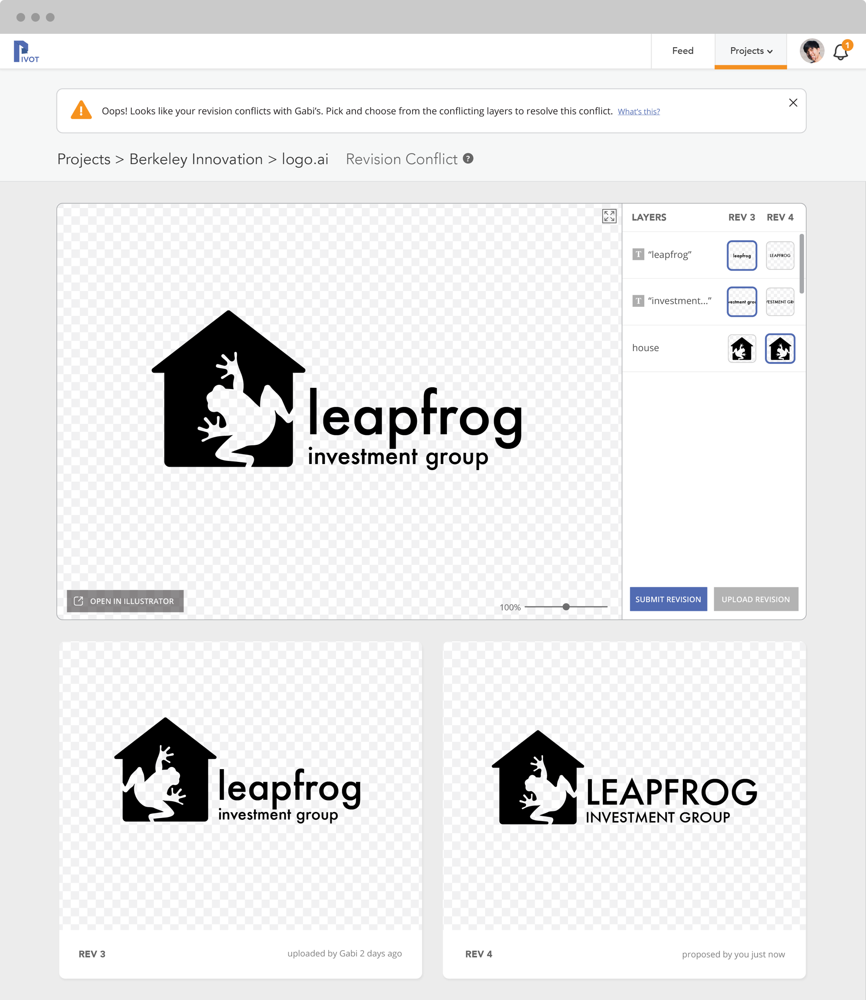
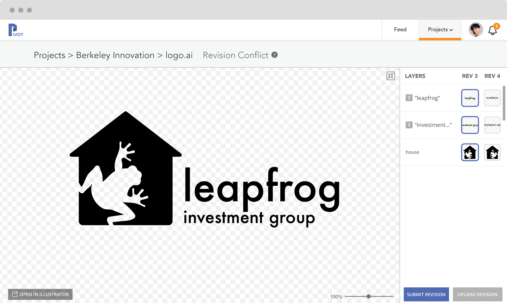
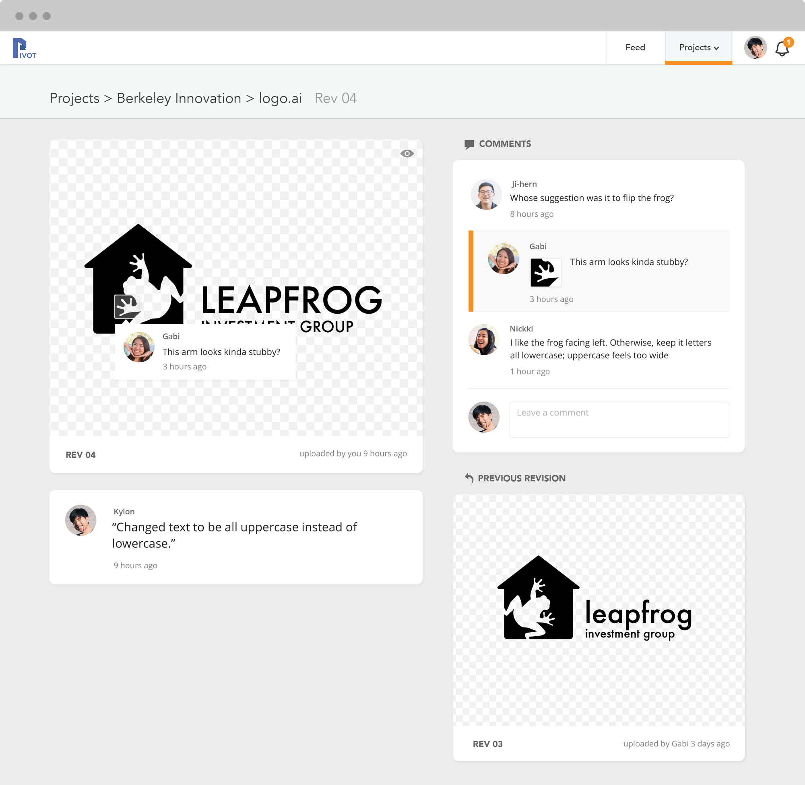

Pivot
Product Design- Balsamiq
- Illustrator
- InVision
Overview
As a member of Berkeley Innovation, a human-centered design club at UC Berkeley, I’m currently working with three other students on a project with Vertigo Software (recently acquired by MLB). We were essentially assigned to design and prototype Git for designers. A list of Git-equivalent features, including branching and the ability to resolve merge conflicts, were given to us, but the design and function of the application was largely up to us.


